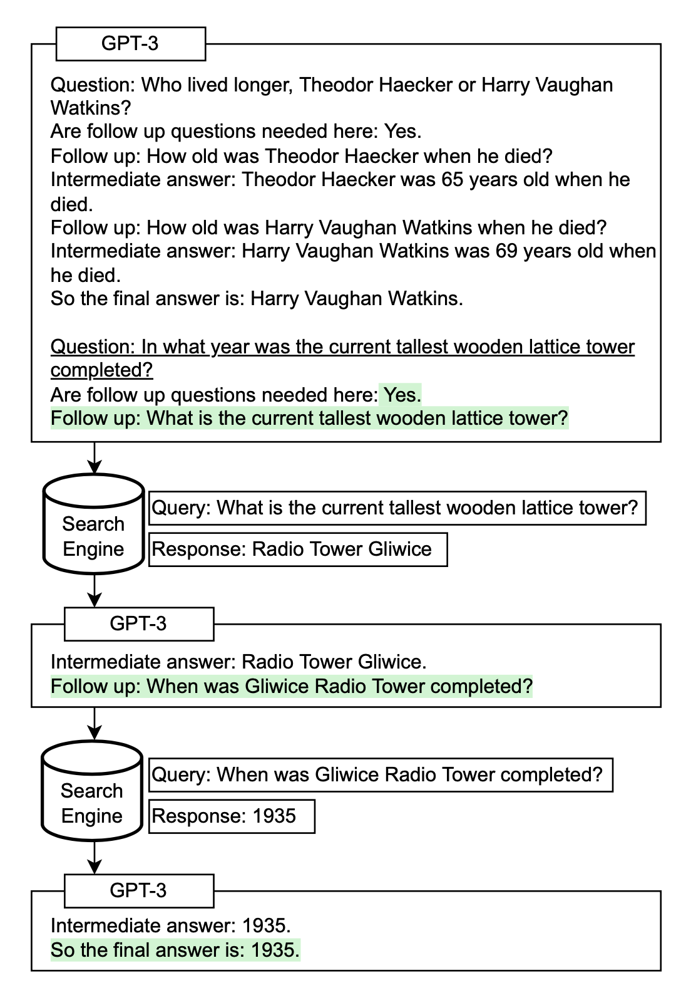
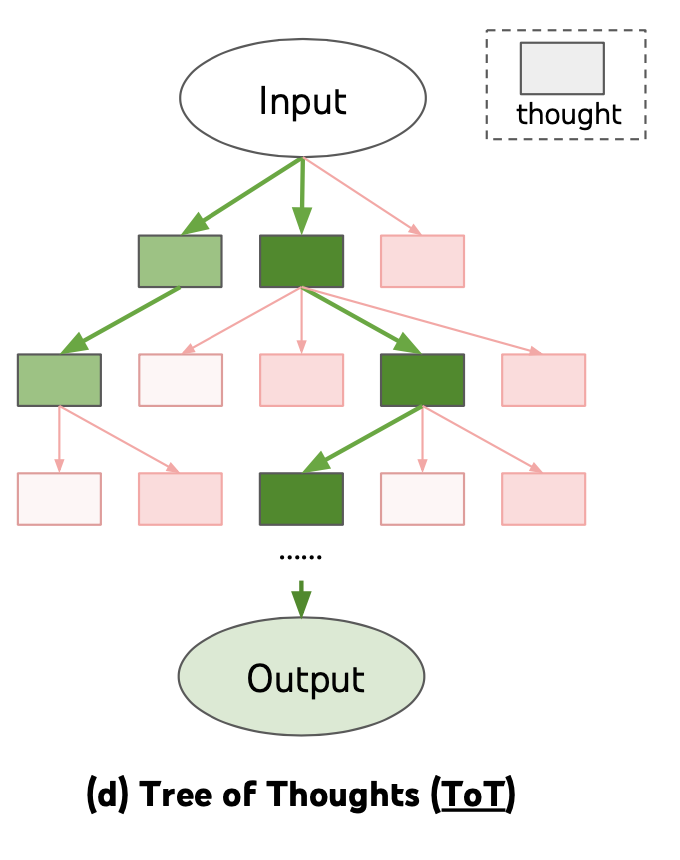
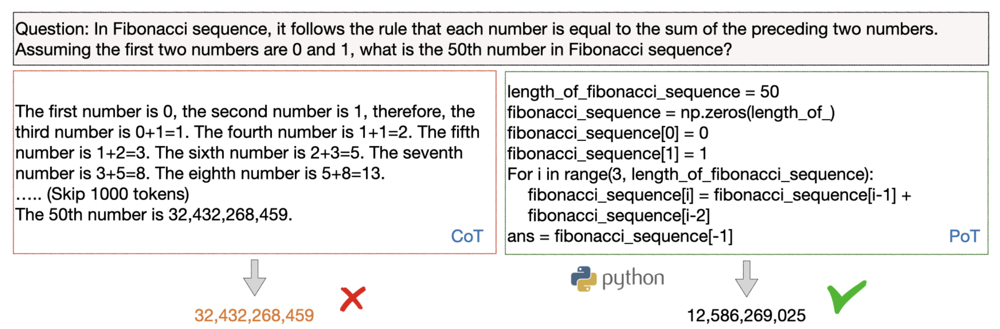
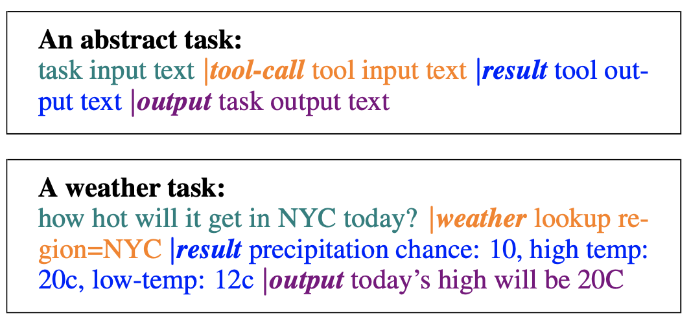
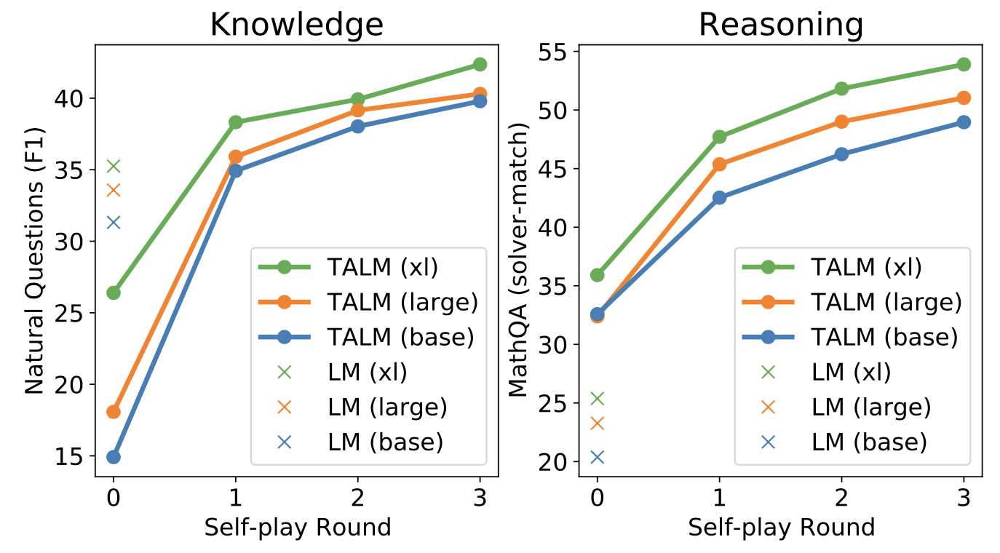
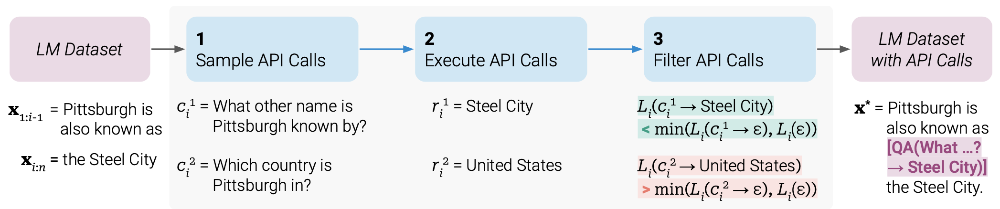

目录
提示工程（Prompt Engineering），也称为上下文提示（In-Context Prompting），是指在不更新模型权重的前提下，通过设计与 LLM 的交互方式来引导其行为以获得预期结果的方法。它是一门经验性科学，不同提示工程方法在不同模型上的效果差异很大，因此需要大量实验和启发式探索。
本文仅关注自回归语言模型的提示工程，不涉及完形填空测试、图像生成或多模态模型。其核心目标是实现对齐（alignment）和模型的可控性（steerability）。可参考我之前关于可控文本生成的文章 可控神经文本生成。
[个人尖锐观点] 我认为有些提示工程论文并不值得写成 8 页长文，因为其中的技巧一两句话就能说清楚，剩下的内容几乎都是基准测试。如果能有一个易用且共享的基准测试基础设施，对社区会更有价值。迭代式提示或外部工具使用并不容易搭建，而且要让整个研究社区统一采用也绝非易事。
基础提示方法#
零样本和少样本学习是提示模型最基础的两种方法，由众多 LLM 论文率先提出，并被广泛用于 LLM 性能的基准测试。
零样本#
零样本学习就是直接将任务描述文本输入模型，并要求其输出结果。
（以下所有情感分析例子均来自 SST-2 数据集）
Text: i'll bet the video game is a lot more fun than the film.
Sentiment:
少样本#
少样本学习会在提示中提供一组高质量的示范示例，每个示例同时包含输入和期望输出。由于模型首先看到高质量例子，它能更好地理解人类的意图和判断答案优劣的标准。因此，少样本学习通常比零样本效果更好。但其代价是消耗更多 token，当输入输出较长时还可能触及上下文长度限制。
Text: (lawrence bounces) all over the stage, dancing, running, sweating, mopping his face and generally displaying the wacky talent that brought him fame in the first place.
Sentiment: positive
Text: despite all evidence to the contrary, this clunker has somehow managed to pose as an actual feature movie, the kind that charges full admission and gets hyped on tv and purports to amuse small children and ostensible adults.
Sentiment: negative
Text: for the first time in years, de niro digs deep emotionally, perhaps because he's been stirred by the powerful work of his co-stars.
Sentiment: positive
Text: i'll bet the video game is a lot more fun than the film.
Sentiment:
许多研究探讨了如何构建上下文示例以最大化性能，并观察到提示格式、训练示例的选择以及示例顺序的不同，可能导致性能出现巨大差异——从接近随机猜测到接近当前最优水平。
Zhao et al. (2021) 研究了少样本分类的情况，并提出 LLM（实验中使用 GPT-3）中存在的几种偏差导致了这种高方差：（1）如果示例中标签分布不均衡，则存在多数标签偏差；（2）近因偏差指模型可能倾向于重复最后出现的标签；（3）常见 token 偏差指 LLM 更倾向于生成常见 token 而非稀有 token。为了克服这些偏差，他们提出了一种方法，在输入为 N/A 时将模型输出的标签概率校准为均匀分布。
示例选择技巧#
示例排序技巧#
指令提示#
在提示中呈现少样本示例的目的是向模型解释我们的意图；换句话说，就是以示范的形式向模型描述任务指令。然而，少样本方式在 token 消耗上较为昂贵，并且由于上下文长度限制而制约输入长度。那么，为什么不直接给出指令呢？
指令型语言模型（例如 InstructGPT、natural instruction）使用高质量的（任务指令、输入、真实输出）三元组对预训练模型进行微调，使其更好地理解用户意图并遵循指令。可控神经文本生成（基于人类反馈的强化学习）是常用的实现方法。这种指令跟随风格的微调能让模型更好地与人类意图对齐，并大幅降低沟通成本。
与指令模型交互时，我们应当详细描述任务要求，力求具体而精确，避免说“不要做什么”，而是明确说明要做什么。
Please label the sentiment towards the movie of the given movie review. The sentiment label should be "positive" or "negative".
Text: i'll bet the video game is a lot more fun than the film.
Sentiment:
说明目标受众是另一种聪明的指令给出方式。
Describe what is quantum physics to a 6-year-old.
... in language that is safe for work.
上下文指令学习（Ye et al. 2023) 将少样本学习与指令提示相结合。它在提示中加入来自不同任务的多个示范示例，每个示范包含指令、任务输入和输出。注意他们的实验仅针对分类任务，且指令提示中包含了所有标签选项。
Definition: Determine the speaker of the dialogue, "agent" or "customer".
Input: I have successfully booked your tickets.
Ouput: agent
Definition: Determine which category the question asks for, "Quantity" or "Location".
Input: What's the oldest building in US?
Ouput: Location
Definition: Classify the sentiment of the given movie review, "positive" or "negative".
Input: i'll bet the video game is a lot more fun than the film.
Output:
自洽性采样#
自洽性采样（Wang et al. 2022a) 是指以温度大于 0 的设置采样多个输出，然后从这些候选结果中选出最佳的一个。选择最佳候选的标准因任务而异。一个通用方案是采用多数投票。对于容易验证的任务（如带单元测试的编程题），我们可以直接运行解释器并用单元测试验证正确性。
思维链（CoT）#
思维链（Chain-of-Thought，CoT）提示（Wei et al. 2022) 会生成一系列简短句子，逐步描述推理逻辑，即所谓的推理链或理由，最终得出答案。CoT 的优势在复杂推理任务上更为明显，尤其在使用大型模型（例如参数超过 500 亿）时。简单任务从 CoT 提示中获益较小。
CoT 提示的类型#
CoT 提示主要有两种类型：
（以下所有数学推理例子均来自 GSM8k）
Question: Tom and Elizabeth have a competition to climb a hill. Elizabeth takes 30 minutes to climb the hill. Tom takes four times as long as Elizabeth does to climb the hill. How many hours does it take Tom to climb up the hill?
Answer: It takes Tom 30*4 = <<30*4=120>>120 minutes to climb the hill.
It takes Tom 120/60 = <<120/60=2>>2 hours to climb the hill.
So the answer is 2.
===
Question: Jack is a soccer player. He needs to buy two pairs of socks and a pair of soccer shoes. Each pair of socks cost $9.50, and the shoes cost $92. Jack has $40. How much more money does Jack need?
Answer: The total cost of two pairs of socks is $9.50 x 2 = $<<9.5*2=19>>19.
The total cost of the socks and the shoes is $19 + $92 = $<<19+92=111>>111.
Jack need $111 - $40 = $<<111-40=71>>71 more.
So the answer is 71.
===
Question: Marty has 100 centimeters of ribbon that he must cut into 4 equal parts. Each of the cut parts must be divided into 5 equal parts. How long will each final cut be?
Answer:
Question: Marty has 100 centimeters of ribbon that he must cut into 4 equal parts. Each of the cut parts must be divided into 5 equal parts. How long will each final cut be?
Answer: Let's think step by step.
技巧与扩展#


自动提示设计#
提示是一串前缀 token，用于在给定输入时提高得到期望输出的概率。因此我们可以将其视为可训练参数，并在嵌入空间中通过梯度下降直接 可控神经文本生成，例如 AutoPrompt（Shin et al., 2020）、Prefix-Tuning（Li & Liang (2021)）、P-tuning（Liu et al. 2021）和 Prompt-Tuning（Lester et al. 2021）。我在《可控神经文本生成》一文中的 可控神经文本生成 对它们有详细介绍。从 AutoPrompt 到 Prompt-Tuning 的趋势是设置越来越简化。
APE（Automatic Prompt Engineer；Zhou et al. 2022）是一种在模型生成的指令候选池中进行搜索的方法，然后根据选定的评分函数过滤候选集，最终选出得分最高的候选。
为了自动构建思维链提示，Shum et al. (2023) 提出了 augment-prune-select 三步流程：
Zhang et al. (2023) 则采用聚类技术对问题进行采样，然后生成思维链。他们观察到 LLM 倾向于犯某些类型的错误。同一类错误在嵌入空间中往往相似，因此会被聚到一起。通过仅从频繁错误簇中采样一个或少数几个示例，我们可以避免过多展示同一类错误，并收集到更多样化的示例集。
增强语言模型#
Mialon et al. (2023) 发表的关于增强语言模型的综述对具备推理能力和可使用外部工具的各类语言模型有很好的覆盖，推荐阅读。
检索#
我们经常需要完成模型预训练截止日期之后的最新的知识，或内部/私有知识库相关的任务。在这种情况下，如果不在提示中明确提供上下文，模型将无法知晓。许多 如何构建开放域问答系统？ 方法都依赖于首先在知识库中进行检索，然后将检索到的内容作为提示的一部分融入。该过程的准确性同时取决于检索和生成两个步骤的质量。
Lazaridou et al. (2022) 研究了如何使用 Google 搜索进行文档检索来增强 LLM。给定一个问题 q，从 Google 返回的 20 个 URL 中提取干净文本，得到一组文档。由于文档较长，每个文档被拆分为 6 个句子的段落 \{p\}。段落按证据段落与查询之间的 TF-IDF 余弦相似度排序。只有最相关的段落会被放入提示中以生成答案 a。
对于闭卷问答，每个示范按以下格式构建少样本提示。将问题与证据交换（问题和答案之间距离更远）被发现会在所有数据集上持续导致更差的结果。
Evidence: ...
Question: ...
Answer: ...
答案概率通过三种方式计算：
根据他们在生成和分类任务上的实验，在三种答案重排序分数中排序为 PoE > 噪声通道 > RAG。在单个概率中，p_\text{LM}(a \mid q, p_i) 和 p_\text{LM}(q \mid p_i, a) 被认为最有信息量。p_\text{LM}(q \mid p_i, a) 捕捉了在给定证据段落和答案的情况下，问题被语言模型解释得有多好，可靠地用于对答案候选进行重排序。
在 SituatedQA 数据集上针对不同日期 grounding 的问题有一个有趣的观察：尽管 LLM（预训练截止到 2020 年）可以通过 Google 搜索获取最新信息，但它在 2020 年之后的问题上表现仍远差于 2020 年之前的问题。这表明上下文信息与模型内部知识之间存在某种差异或冲突。
有趣的是，即使只进行“内部检索”——即在回答问题前先生成关于某个主题的知识——也被证明是有益的（Liu et al. 2022）。首先我们可以使用以下模板提取知识：
Generate some knowledge about the input. Examples:
Input: What type of water formation is formed by clouds?
Knowledge: Clouds are made of water vapor.
Input: {question}
Knowledge:
然后利用模型生成的知识，进一步提示 LM 得到答案。
编程语言#
PAL（Program-aided language models；Gao et al. 2022）和 PoT（Program of Thoughts prompting；Chen et al. 2022）都让 LLM 生成编程语言语句来解决自然语言推理问题，从而将求解步骤卸载到 Python 解释器等运行时。这种设置将复杂计算与推理解耦。它依赖于编码能力足够强的语言模型。

外部 API#
TALM（Tool Augmented Language Models；Parisi et al. 2022）是一种通过文本到文本 API 调用进行增强的语言模型。LM 被引导根据任务输入文本生成 |tool-call 和工具输入文本，以构造 API 调用请求。当出现 |result 时，会调用指定的工具 API 并将返回结果追加到文本序列中。最终输出在 |output token 之后生成。

TALM 采用自博弈（self-play）方法来迭代地 bootstrapping 工具使用示例数据集，并据此对 LM 进行微调。这种自博弈被定义为模型与工具 API 进行交互，根据新加入的工具 API 是否能改进模型输出，迭代地扩展数据集。Toolformer 也采用了同样的思路，下文将更详细介绍。该流程大致模拟了一个强化学习过程，其中 LM 是策略网络，通过策略梯度结合二元奖励信号进行训练。

Toolformer（Schick et al. 2023）是一种可以通过简单 API 使用外部工具的语言模型，它以自监督方式构建，每个 API 仅需少量示范。Toolformer 的工具箱包括：

Toolformer 的训练流程如下：
- Each API call is represented as a tuple of (API name, corresponding input), $c=(a_c, i_c)$ and its corresponding result is denoted as $r$. The API call sequences with and without results are labeled as follows, respectively:
<div>
$$
\begin{aligned}
e(c) &= \langle\texttt{API}\rangle a_c(i_c) \langle\texttt{/API}\rangle \\
e(c, r) &= \langle\texttt{API}\rangle a_c(i_c) \to r \langle\texttt{/API}\rangle
\end{aligned}
$$
</div>
- Sample API calls based on the probabilities $p_\text{LM}(\langle\texttt{API}\rangle \mid \text{prompt}(\mathbf{x}), \mathbf{x}_{1:i})$ and select top $k$ candidate positions for doing API calls at position $i$ if the probability is larger than a threshold.
- Then we sample potential API calls from the LM given the sequence $[\text{prompt}(\mathbf{x}), x_1, \dots, x_{i-1}, \langle\texttt{API}\rangle]$ as prefix and $\langle\texttt{/API}\rangle$ as suffix.
在推理时，解码持续进行直到模型产生“\to ” token，表示它接下来期望来自 API 调用的响应。
Toolformer 目前还不支持链式工具使用（即把一个工具的输出作为另一个工具的输入）或交互式使用（即在人工选择后采用 API 响应）。这两者都是未来值得扩展的有趣方向。
引用#
引用格式：
Weng, Lilian. (Mar 2023). Prompt Engineering. Lil’Log. https://lilianweng.github.io/posts/2023-03-15-prompt-engineering/.
@article{weng2023prompt,
title = "Prompt Engineering",
author = "Weng, Lilian",
journal = "lilianweng.github.io",
year = "2023",
month = "Mar",
url = "https://lilianweng.github.io/posts/2023-03-15-prompt-engineering/"
}
有用资源#
参考文献#
[1] Zhao et al. “Calibrate Before Use: Improving Few-shot Performance of Language Models.” ICML 2021
[2] Liu et al. “What Makes Good In-Context Examples for GPT-3?” arXiv preprint arXiv:2101.06804 (2021).
[3] Lu et al. “Fantastically Ordered Prompts and Where to Find Them: Overcoming Few-Shot Prompt Order Sensitivity.” ACL 2022
[4] Ye et al. “In-Context Instruction Learning.” arXiv preprint arXiv:2302.14691 (2023).
[5] Su et al. “Selective annotation makes language models better few-shot learners.” arXiv preprint arXiv:2209.01975 (2022).
[6] Rubin et al. “Learning to retrieve prompts for in-context learning.” NAACL-HLT 2022
[7] Wei et al. “Chain of thought prompting elicits reasoning in large language models.” NeurIPS 2022
[8] Wang et al. “Self-Consistency Improves Chain of Thought Reasoning in Language Models.” ICLR 2023.
[9] Diao et al. “Active Prompting with Chain-of-Thought for Large Language Models.” arXiv preprint arXiv:2302.12246 (2023).
[10] Zelikman et al. “STaR: Bootstrapping Reasoning With Reasoning.” arXiv preprint arXiv:2203.14465 (2022).
[11] Ye & Durrett. “The unreliability of explanations in few-shot in-context learning.” arXiv preprint arXiv:2205.03401 (2022).
[12] Trivedi et al. “Interleaving retrieval with chain-of-thought reasoning for knowledge-intensive multi-step questions.” arXiv preprint arXiv:2212.10509 (2022).
[13] Press et al. “Measuring and narrowing the compositionality gap in language models.” arXiv preprint arXiv:2210.03350 (2022).
[14] Yao et al. “ReAct: Synergizing reasoning and acting in language models.” ICLR 2023.
[15] Fu et al. “Complexity-based prompting for multi-step reasoning.” arXiv preprint arXiv:2210.00720 (2022).
[16] Wang et al. “Rationale-augmented ensembles in language models.” arXiv preprint arXiv:2207.00747 (2022).
[17] Zhang et al. “Automatic chain of thought prompting in large language models.” arXiv preprint arXiv:2210.03493 (2022).
[18] Shum et al. “Automatic Prompt Augmentation and Selection with Chain-of-Thought from Labeled Data.” arXiv preprint arXiv:2302.12822 (2023).
[19] Zhou et al. “Large Language Models Are Human-Level Prompt Engineers.” ICLR 2023.
[20] Lazaridou et al. “Internet augmented language models through few-shot prompting for open-domain question answering.” arXiv preprint arXiv:2203.05115 (2022).
[21] Chen et al. “Program of Thoughts Prompting: Disentangling Computation from Reasoning for Numerical Reasoning Tasks.” arXiv preprint arXiv:2211.12588 (2022).
[22] Gao et al. “PAL: Program-aided language models.” arXiv preprint arXiv:2211.10435 (2022).
[23] Parisi et al. “TALM: Tool Augmented Language Models” arXiv preprint arXiv:2205.12255 (2022).
[24] Schick et al. “Toolformer: Language Models Can Teach Themselves to Use Tools.” arXiv preprint arXiv:2302.04761 (2023).
[25] Mialon et al. “Augmented Language Models: a Survey” arXiv preprint arXiv:2302.07842 (2023).
[26] Yao et al. “Tree of Thoughts: Deliberate Problem Solving with Large Language Models.” arXiv preprint arXiv:2305.10601 (2023).